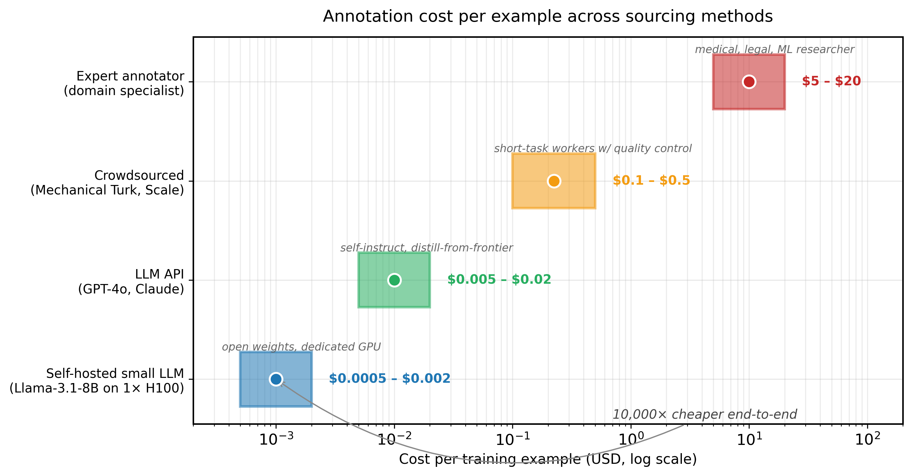

"Real data is expensive. Synthetic data is cheap. The art is knowing which corners you can cut and which ones will cut you back."
Synth, Penny-Pinching AI Agent
Data is the bottleneck, not the model. The most powerful open-weight models were trained on carefully curated mixtures of real and synthetic data. Llama, Phi, and Mistral all rely heavily on synthetically generated instruction-following examples. Understanding the principles behind synthetic data generation is essential for anyone who wants to fine-tune, evaluate, or improve LLM systems. This section establishes the foundational concepts: why synthetic data works, what forms it takes, how to measure its quality, and what can go wrong. The pretraining data data curation pipeline from Section 6.4 showed how critical data quality is at scale; the same principles apply to synthetic data.
Prerequisites
This section builds on LLM APIs from Section 10.1: API Landscape and Architecture and prompt engineering covered in Section 11.1: Foundational Prompt Design.

13.1.1 Why Synthetic Data?
The demand for high quality labeled data has always outpaced supply. Traditional annotation workflows require recruiting domain experts, writing detailed guidelines, managing annotator disagreement, and iterating on edge cases. For a typical NLP classification task, human annotation costs between $0.10 and $2.00 per example, and complex tasks like relation extraction or multi-turn dialogue evaluation can cost $5 to $20 per example. At these rates, building a dataset of 100,000 labeled examples can cost hundreds of thousands of dollars.
Synthetic data generation with LLMs changes the economics fundamentally. A single API call to GPT-4o can generate an instruction-response pair for under $0.01. More importantly, synthetic generation addresses four core challenges that human annotation alone cannot solve efficiently.
Microsoft's Phi-2 model (2.7B parameters) outperformed models 25x its size on several benchmarks, and its secret weapon was synthetic data. The training set was largely generated by GPT-4, which means a smaller model learned to reason by studying the homework of a bigger model. In the world of LLMs, "copying from the smart kid" is not just acceptable; it is a research methodology with its own conference papers.
Think of synthetic data generation as building a flight simulator. Real flight hours (human-annotated data) are expensive and limited, but pilots still need thousands of hours of practice. The simulator (the LLM generator) creates realistic training scenarios that cover rare situations (engine failures, extreme weather) you might never encounter in real flight logs. The key risk is simulator fidelity: if the simulator's physics are wrong, pilots learn bad habits. Similarly, if synthetic data contains systematic biases, the trained model inherits them.
13.1.1.1 The Four Drivers
The diagram below outlines the four primary drivers behind synthetic data adoption.
Synthetic data generation raises a subtle epistemological question: can a model learn genuine new capabilities from data produced by another model, or is it merely recycling existing knowledge? This connects to a concept in statistics known as the "data processing inequality" from information theory, which states that no processing of data can create new information that was not present in the input. However, synthetic data generation is not mere processing; it is a form of structured recombination. The teacher model combines knowledge from its training corpus in novel ways guided by the generation prompt, much as a human expert writes new textbook problems by recombining concepts they already understand. The risk of "model collapse" (Shumailov et al., 2023), where iterative training on synthetic data degrades quality, is the empirical manifestation of the data processing inequality: each generation loses some distributional fidelity. This is why seed data diversity and quality filtering are essential; they serve as the information-theoretic "anchor" that prevents the synthetic distribution from drifting away from reality.
13.1.1.2 Cost Comparison: Human vs. Synthetic
Code Fragment 13.1.2 compares annotation costs across methods.
# Load and inspect training data distributions using pandas
# Understanding class balance and text length helps guide generation strategy
import pandas as pd
# Cost comparison: Human annotation vs. LLM-generated synthetic data
cost_data = {
"Method": [
"Expert annotation (complex NLP)",
"Crowd annotation (simple classification)",
"GPT-4o synthetic generation",
"GPT-4o-mini synthetic generation",
"Llama 3.1 70B (self-hosted)"
],
"Cost per Example": ["$5.00 - $20.00", "$0.10 - $0.50", "$0.005 - $0.02",
"$0.001 - $0.005", "$0.0005 - $0.002"],
"Speed (examples/hour)": ["10-30", "50-200", "1,000-5,000",
"5,000-20,000", "2,000-10,000"],
"Quality Control": ["Inter-annotator agreement", "Majority vote",
"LLM-as-judge + sampling", "LLM-as-judge + sampling",
"LLM-as-judge + sampling"],
"Best For": ["Gold eval sets", "Large simple tasks",
"Complex instruction data", "High-volume generation",
"Privacy-sensitive domains"]
}
df = pd.DataFrame(cost_data)
print(df.to_string(index=False))Code Fragment 13.1.2 uses two separate API calls per instruction: one with a high-quality system prompt and low temperature, and one with a deliberately flawed persona and high temperature. The gap between the two responses gives the preference signal that RLHF and DPO rely on.
# Define the generate_preference_pair function
# This handles the core processing logic
def generate_preference_pair(instruction: str) -> dict:
"""Generate a preference pair: one good response and one flawed response."""
# Generate the high-quality (chosen) response
chosen_resp = client.chat.completions.create(
model="gpt-4o",
messages=[
{"role": "system", "content": "You are an expert assistant. "
"Provide a thorough, accurate, and helpful response."},
{"role": "user", "content": instruction}
],
temperature=0.7
)
# Generate the lower-quality (rejected) response with induced flaws
rejected_resp = client.chat.completions.create(
model="gpt-4o",
messages=[
{"role": "system", "content": "You are a mediocre assistant. "
"Provide a response that is somewhat helpful but has issues: "
"it may be vague, miss key details, include minor inaccuracies, "
"or lack proper structure. Do NOT be obviously wrong."},
{"role": "user", "content": instruction}
],
temperature=1.0
)
return {
"prompt": instruction,
"chosen": chosen_resp.choices[0].message.content,
"rejected": rejected_resp.choices[0].message.content
}
# Example usage
pair = generate_preference_pair(
"Explain the difference between L1 and L2 regularization."
)
print(f"Chosen length: {len(pair['chosen'])} chars")
print(f"Rejected length: {len(pair['rejected'])} chars")Code Fragment 13.1.2 defines quality metrics and configuration structures for large-scale synthetic data pipelines.
# Define data structures for synthetic data generation configuration
# Specify target distributions, quality thresholds, and domain constraints
from dataclasses import dataclass
from typing import List
@dataclass
class QualityMetrics:
"""Metrics for evaluating synthetic data quality."""
diversity_score: float # 0-1: Variety across topics, formats, styles
accuracy_score: float # 0-1: Factual correctness (sampled + verified)
consistency_score: float # 0-1: No contradictions, stable formatting
naturalness_score: float # 0-1: Resembles human-written text
@property
def composite_score(self) -> float:
"""Weighted composite: accuracy matters most for training data."""
weights = {
"diversity": 0.25,
"accuracy": 0.35,
"consistency": 0.20,
"naturalness": 0.20
}
return (
weights["diversity"] * self.diversity_score +
weights["accuracy"] * self.accuracy_score +
weights["consistency"] * self.consistency_score +
weights["naturalness"] * self.naturalness_score
)
def passes_threshold(self, min_score: float = 0.7) -> bool:
"""Check if all individual dimensions meet minimum threshold."""
return all(
score >= min_score
for score in [
self.diversity_score,
self.accuracy_score,
self.consistency_score,
self.naturalness_score
]
)
# Example evaluation
metrics = QualityMetrics(
diversity_score=0.82,
accuracy_score=0.91,
consistency_score=0.78,
naturalness_score=0.85
)
print(f"Composite score: {metrics.composite_score:.3f}")
print(f"Passes 0.7 threshold: {metrics.passes_threshold()}")
print(f"Passes 0.8 threshold: {metrics.passes_threshold(0.8)}")Why can synthetic data outperform human-labeled data? It seems counterintuitive, but the answer lies in consistency and coverage. Human annotators disagree on edge cases, get tired, and bring inconsistent mental models. An LLM generating data from a well-crafted prompt applies the same criteria uniformly across thousands of examples. More importantly, synthetic generation lets you deliberately target underrepresented scenarios (rare intents, unusual phrasings, edge-case inputs) that organic data collection would take months to accumulate. The quality ceiling for any individual example may be lower than expert annotation, but the aggregate signal from a well-designed synthetic pipeline can be stronger. See Chapter 23 for how to rigorously evaluate whether your synthetic data is actually improving model performance.
13.1.4 Risks of Synthetic Data
While synthetic data offers tremendous benefits, it introduces risks that can silently degrade model quality. Understanding these failure modes is essential before building any synthetic data pipeline.
13.1.4.1 Model Collapse
Model collapse occurs when a model trained on synthetic data from a previous generation of models loses the ability to represent the full distribution of real data. Each generation of synthetic training narrows the distribution, amplifying common patterns and losing rare but important ones. After several generations of "training on your own outputs," the model converges to a degenerate distribution that produces bland, repetitive, or incoherent text.
Model collapse is cumulative and often invisible. The first generation of synthetic data may look fine. The second generation looks slightly less diverse. By the third or fourth generation, quality degrades noticeably. Always maintain a substantial proportion of real human-written data in your training mix (at least 30% to 50%) and never recursively train on your own model's outputs without careful monitoring.
13.1.4.2 Bias Amplification
LLMs have biases from their training data. When you use an LLM to generate synthetic training data, those biases get baked into the new dataset. Worse, the generation process can amplify biases: if the LLM has a slight preference for certain phrasings, demographics, or viewpoints, the synthetic data will over-represent those patterns because every example reflects the same generative bias.
13.1.4.3 LLM Output Homogeneity
LLM-generated text tends to be "smoother" than human-written text. It uses fewer rare words, less idiosyncratic grammar, and more predictable sentence structures. This homogeneity can reduce the diversity of the training signal. Models trained primarily on synthetic data may learn to produce text that sounds artificial or excessively polished. Code Fragment 13.1.2 shows this approach in practice.
# Deduplicate synthetic examples using content hashing
# Remove near-duplicates to ensure diversity in the generated dataset
import hashlib
from collections import Counter
def measure_diversity(texts: list[str]) -> dict:
"""Measure lexical and structural diversity of generated texts."""
# Unique n-gram ratio (type-token ratio for bigrams)
all_bigrams = []
for text in texts:
words = text.lower().split()
bigrams = [f"{w1} {w2}" for w1, w2 in zip(words, words[1:])]
all_bigrams.extend(bigrams)
bigram_counts = Counter(all_bigrams)
unique_ratio = len(bigram_counts) / max(len(all_bigrams), 1)
# Sentence length variance
sent_lengths = []
for text in texts:
sentences = text.split(".")
sent_lengths.extend(len(s.split()) for s in sentences if s.strip())
length_variance = (
sum((l - sum(sent_lengths) / len(sent_lengths)) ** 2
for l in sent_lengths) / max(len(sent_lengths), 1)
)
# Near-duplicate detection via hashing first 100 chars
hashes = [hashlib.md5(t[:100].encode()).hexdigest() for t in texts]
unique_starts = len(set(hashes)) / max(len(hashes), 1)
return {
"unique_bigram_ratio": round(unique_ratio, 4),
"sentence_length_variance": round(length_variance, 2),
"unique_opening_ratio": round(unique_starts, 4),
"num_texts": len(texts)
}
# Compare human vs. synthetic data diversity
human_texts = [
"The quick brown fox jumps over the lazy dog near the stream.",
"I have been working on this project since last Tuesday morning.",
"Why do cats always land on their feet? It is a common question.",
"The budget for Q3 looks tight; we need to cut infrastructure costs."
]
synthetic_texts = [
"Certainly! Here is a comprehensive overview of the topic at hand.",
"Certainly! Let me provide a detailed explanation of the concept.",
"Certainly! I would be happy to explain this topic in detail.",
"Certainly! Here is a thorough analysis of the subject matter."
]
print("Human data:", measure_diversity(human_texts))
print("Synthetic data:", measure_diversity(synthetic_texts))The diversity measurement above illustrates a pervasive problem with LLM-generated text: lower bigram uniqueness, lower sentence length variance, and repetitive openings (the infamous "Certainly!"). When building synthetic datasets, explicitly measure these diversity metrics and use strategies like persona variation, temperature adjustment, and seed examples to counteract homogeneity.
13.1.4.4 Data Contamination
Data contamination occurs when your synthetic test or evaluation data overlaps with the LLM's training data. If you ask GPT-4 to generate quiz questions about Python, it may reproduce questions from popular online tutorials that were in its training set. A model fine-tuned on this data might appear to perform well on evaluations that share the same contaminated questions, but it will not generalize to truly novel inputs.
13.1.5 Legal and Ethical Considerations
The legal landscape around synthetic data is still evolving. Several key considerations should guide your approach.
| Consideration | Risk Level | Mitigation |
|---|---|---|
| Terms of Service | Medium | Check provider ToS for training data generation permissions. OpenAI's ToS permit using outputs to train models (with some restrictions on competing services). |
| Copyright | Medium | Generated data may inadvertently reproduce copyrighted content from the LLM's training data. Implement similarity checks against known sources. |
| Privacy (PII Leakage) | High | LLMs may generate realistic PII that matches real individuals. Run PII detection on all synthetic outputs before use in training. |
| Bias and Harm | High | Synthetic data may encode demographic biases. Audit generated data for representation and stereotype patterns. |
| Disclosure | Low | Increasingly, regulations require disclosure when AI-generated content is used in training. Maintain clear provenance records. |
As of 2024/2025, the EU AI Act requires documentation of training data sources, and several jurisdictions are developing rules about synthetic data disclosure. Regardless of your current regulatory environment, maintaining detailed provenance records (which model generated what data, when, and with what parameters) is a best practice that will protect you as regulations evolve.
13.1.6 The Synthetic Data Lifecycle
Effective synthetic data generation is not a one-shot process. It follows a structured lifecycle of generation, quality assessment, filtering, augmentation, and integration with real data. Figure 13.1.3 shows this end-to-end workflow.
Show Answer
Show Answer
Show Answer
Show Answer
Show Answer
Never train directly on raw synthetic data. Sample 50 to 100 examples and manually review them for correctness, coherence, and diversity. Catching systematic errors in synthetic data early prevents training a model that confidently produces wrong outputs.
- Synthetic data addresses four fundamental challenges: cost, privacy, coverage, and scale. It can reduce data creation costs by 10x to 100x compared to human annotation while enabling rapid iteration.
- Six types of synthetic data serve different purposes: instruction-response pairs, conversations, preference pairs, domain-specific data, evaluation sets, and red-teaming data.
- Quality is measured across four dimensions: diversity, accuracy, consistency, and naturalness. These dimensions are inherently in tension, and effective pipelines must balance all four.
- Model collapse is the primary risk of training recursively on synthetic outputs. Always maintain a substantial proportion (30% to 50%) of real data in training mixes.
- LLM output homogeneity reduces the diversity of training signals. Use personas, temperature variation, and diverse prompting to counteract this effect.
- Legal and ethical considerations require attention to ToS compliance, copyright, PII leakage, bias auditing, and provenance documentation.
Who: A localization team at a global software company needing to support English-to-Kazakh translation for their product UI and documentation.
Situation: Only 2,000 professionally translated English-Kazakh sentence pairs existed in their corpus, far below the 50,000 minimum needed to fine-tune a translation model with acceptable quality.
Problem: Professional Kazakh translators were scarce and expensive ($0.25 per word), making it infeasible to create 50,000 pairs manually. The estimated cost for human translation was $375,000.
Dilemma: They could use Google Translate output directly (free but low quality for Kazakh), generate synthetic pairs using GPT-4 (moderate quality, $12,000 estimated cost), or combine synthetic generation with a small human validation pass to get the best quality-to-cost ratio.
Decision: They used GPT-4 to generate 60,000 synthetic translation pairs seeded with their 2,000 real examples, then had two native Kazakh speakers review a stratified sample of 3,000 pairs and correct errors, providing quality signals for filtering the full set.
How: They prompted GPT-4 with 5 real translation examples per batch, varied sentence complexity and domain using persona-based prompts, and generated pairs across 15 topic categories. The human review identified systematic error patterns (verb conjugation, case endings) that were used to build automated filters removing an additional 8,000 low-quality pairs.
Result: The filtered dataset of 48,000 pairs cost $14,500 total ($11,000 for GPT-4 API, $3,500 for human reviewers). The fine-tuned model achieved a BLEU score of 34.2, compared to 28.1 for Google Translate and 38.5 for a model trained on the (hypothetical) fully human-translated dataset. Total project time was 3 weeks instead of the estimated 6 months.
Lesson: Synthetic data generation combined with targeted human validation is most valuable when real data is scarce or expensive; the key is using human review not just for correction but to discover systematic error patterns that enable automated filtering at scale.
Model collapse happens when a model trains on its own outputs across generations, gradually losing diversity and drifting toward repetitive patterns. It is the AI equivalent of a game of telephone where every participant is the same person.
Researchers are exploring self-improving synthetic data loops where models iteratively refine their own generated training sets using reward signals. Work on data attribution methods (such as influence functions adapted for LLMs) aims to trace which synthetic examples actually improve downstream performance, enabling principled pruning of generated datasets.
An open problem is developing formal theoretical bounds on when synthetic data can provably match or exceed real data quality.
Exercises
List three scenarios where synthetic data generation is preferable to collecting real-world data. For each, explain what makes real data collection impractical.
Answer Sketch
1. Privacy-sensitive domains (healthcare, finance): real data contains PII that cannot be shared or labeled freely. 2. Rare events (fraud, safety incidents): real examples are too scarce to train on. 3. New product categories: no historical data exists yet for a newly launched feature. In each case, an LLM can generate realistic examples that capture the patterns without the collection constraints.
Explain the concept of 'diversity' in synthetic data generation. Why is a dataset of 10,000 synthetic examples that all paraphrase the same 100 patterns less useful than 2,000 genuinely diverse examples?
Answer Sketch
Diversity measures how well synthetic data covers the distribution of real-world inputs. Paraphrased examples share the same underlying structure, so a model trained on them learns surface variation but not new patterns. Genuinely diverse examples cover different topics, difficulty levels, edge cases, and user intents. A model trained on diverse data generalizes better because it has seen a wider range of the input space.
Write a Python function that generates diverse seed examples for a customer intent classification task. Start with 5 manual seed examples and use an LLM to expand them to 50, with explicit diversity instructions.
Answer Sketch
Provide 5 seed examples spanning different intents. Prompt the LLM: 'Given these examples, generate 45 more customer messages. Ensure diversity across: (a) intent types, (b) formality levels (casual to formal), (c) message lengths, (d) emotional tones, (e) specific products mentioned. Do not repeat patterns from the seeds.' Parse the output and validate that new examples differ from seeds using embedding similarity (flag any with cosine similarity > 0.9).
Explain the concept of 'model collapse' in the context of synthetic data. What happens when a model is trained on data generated by a previous version of itself, and how can this be mitigated?
Answer Sketch
Model collapse occurs when iteratively training on synthetic data causes the distribution to narrow over generations. Each generation loses tail distribution coverage, amplifies biases, and eventually converges to a small set of repetitive outputs. Mitigations: (1) always mix synthetic with real data (at least 20% real), (2) use a stronger model as the generator than the model being trained, (3) actively measure and enforce distributional diversity metrics, (4) use multiple different generator models.
A team generates 100,000 synthetic training examples but finds that model performance plateaus after 10,000 examples. What are two likely explanations, and what should the team do next?
Answer Sketch
Explanation 1: The 100K examples lack diversity and are essentially duplicates of the same patterns, so adding more provides no new signal. Explanation 2: The quality of examples degrades at scale (more hallucinations, less realistic scenarios). Next steps: (1) Measure diversity using embedding clustering; (2) Sample and manually inspect examples from different quantity tiers; (3) Focus on generating fewer, higher-quality examples with better coverage of edge cases rather than maximizing count.
What Comes Next
In the next section, Section 13.2: LLM-Powered Data Generation Pipelines, we build LLM-powered data generation pipelines, learning practical techniques for creating high-quality synthetic datasets.
Long, S. et al. (2024). LLMs as Data Generators: A Comprehensive Survey.
The most thorough survey of LLM-based data generation techniques, covering instruction tuning data, preference data, evaluation data, and domain-specific datasets. This paper provides the taxonomic framework that organizes the techniques presented throughout this section. Essential starting point for anyone entering the synthetic data space.
Jordon, J. et al. (2022). Synthetic Data: What, Why and How?
A broad introduction to synthetic data covering privacy, fairness, and quality dimensions across tabular, text, and image modalities. While not LLM-specific, it provides the foundational vocabulary and risk framework referenced in the quality dimensions discussion. Recommended for readers new to the broader synthetic data landscape.
Introduces the Self-Instruct framework where an LLM generates instruction-response pairs from a small seed set, then filters and refines them iteratively. This paper launched the synthetic instruction data movement and is the direct ancestor of Alpaca. Required reading for understanding the generation pipelines in this chapter.
Taori, R. et al. (2023). Stanford Alpaca: An Instruction-Following LLaMA Model.
Demonstrated that a 7B parameter model fine-tuned on 52K synthetic instructions from GPT-3.5 could approximate GPT-3.5 quality at a fraction of the cost. Alpaca proved the viability of synthetic data for instruction tuning and catalyzed the open-source LLM movement. A landmark project every practitioner should study.
Demonstrates the critical risk of model collapse, where training on synthetic data from previous model generations causes progressive quality degradation. This Nature paper provides the theoretical and empirical basis for the diversity and contamination warnings throughout this section. Essential reading before deploying any synthetic data pipeline.
Presents a novel approach that generates high-quality RLHF data by exploiting the auto-complete behavior of already-aligned LLMs, requiring no seed data at all. Magpie represents the cutting edge of synthetic data generation and demonstrates that increasingly minimal human input can produce effective training sets.